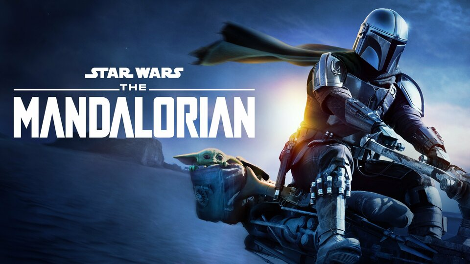

Oleh - Farras Naufal
NIM - 11210251000011


sumber:pexels.com
Selama beberapa tahun terakhir, dunia hiburan televisi telah menyuguhkan sejumlah series yang begitu mengagumkan. Dari drama mendalam hingga fantasi epik, serial TV modern menawarkan beragam cerita yang tak hanya menghibur, tetapi juga memukau penonton dengan plot yang rumit dan karakter yang mendalam. Apakah kamu tengah mencari rekomendasi series terbaru untuk ditonton? Penulis telah merangkum tujuh series pilihan yang patut masuk dalam daftar tontonan wajibmu.
Tanpa perlu menunggu lebih lama, mari kita simak rekomendasi series ini yang memiliki segalanya: dari cerita yang menarik hingga produksi yang luar biasa. Setiap series memiliki daya tarik uniknya sendiri, siap memikatmu ke dalam dunia yang penuh petualangan dan emosi. Berikut adalah tujuh rekomendasi series yang tak boleh kamu lewatkan. Siapkan cemilan favoritmu dan nikmati petualangan seru!

Breaking Bad adalah salah satu serial televisi paling ikonik yang pernah ada. Ceritanya mengisahkan transformasi drastis seorang guru kimia bernama Walter White, yang beralih menjadi produsen dan pengedar metamfetamin demi mencukupi kebutuhan keluarganya setelah didiagnosis menderita kanker.
Serial ini dikenal karena penulisan cerita yang brilian, karakter-karakter kompleks, dan penampilan akting luar biasa, terutama dari Bryan Cranston (Walter White) dan Aaron Paul (Jesse Pinkman). Breaking Bad berhasil menggambarkan perubahan moral dan psikologis karakter utamanya seiring dengan kejadian yang semakin mendalam.
Penggambaran konflik batin, perjuangan keuangan, dan pertempuran kekuasaan membuat serial ini memukau. Skenario yang penuh ketegangan, plot yang tak terduga, dan pengembangan karakter yang kuat menjadikan Breaking Bad sebagai salah satu karya terbaik dalam dunia televisi. Bagi pecinta drama kriminal, serial ini mutlak untuk ditonton.
"Lihat Trailer"

Black Mirror adalah sebuah karya seni televisi yang luar biasa dan menghadirkan pandangan yang mendalam terkait dampak teknologi pada masyarakat modern. Setiap episodenya mengambil pendekatan yang berbeda, membawa penonton ke dalam cerita-cerita independen yang menyajikan dunia yang futuristik namun sering kali menakutkan. Serial ini mengungkapkan sisi gelap dan kompleks dari teknologi, mempertanyakan moralitas dan etika di era digital.
Dalam setiap episode, Black Mirror memukau penonton dengan skenario yang cerdas dan imajinatif. Cerita-cerita yang dikemas dengan baik menghadirkan refleksi mendalam tentang perilaku manusia dalam menghadapi inovasi teknologi yang semakin maju. Selain itu, serial ini juga menonjolkan akting yang brilian, pengarahan yang tajam, serta estetika visual yang memukau, semuanya menyatu untuk menciptakan pengalaman menonton yang menggugah pikiran. Black Mirror adalah pilihan yang sempurna bagi pecinta fiksi ilmiah dan peminat cerita seru yang berbeda dan penuh perenungan.
Lihat Trailer

The Mandalorianadalah keajaiban ruang angkasa yang membawa kembali esensi epik dan petualangan ke dalam alam serial TV. Cerita ini mengikuti perjalanan seorang prajurit mandalorian, Din Djarin, yang juga dikenal sebagai Mando, di galaksi Star Wars. Serial ini sukses membawa nuansa klasik Star Wars sambil memperkenalkan elemen baru dan memfokuskan pada karakter dan alur cerita yang kuat.
Salah satu kekuatan utama The Mandalorian adalah karakter-karakternya yang kuat dan kompleks. Mando, dengan helm besarnya yang ikonik, menawarkan gambaran tentang kehidupan seorang prajurit dengan kode etik yang teguh. Selain itu, dinamika hubungan antara Mando dan 'The Child' atau 'Baby Yoda', yang menjadi fenomena budaya, memunculkan momen-momen manis dan emosional dalam serial ini.
Produksi visual yang luar biasa juga tidak dapat diabaikan. Efek khusus yang memukau, desain luar angkasa yang detail, dan musik khas Star Wars membentuk atmosfer yang mendalam dan mendebarkan. Dengan plot yang penuh tindakan, misteri, dan intrik, The Mandalorian mengajak penonton untuk menjelajahi galaksi yang penuh dengan bahaya dan keajaiban. Serial ini adalah must-watch bagi penggemar Star Wars dan pecinta cerita epik yang seru dan menghibur.
Lihat Trailer

Modern Family adalah persembahan cemerlang dalam genre komedi situasi yang memukau penonton dengan humor segar dan karakter-karakter yang mencuri perhatian. Serial ini mengisahkan kehidupan tiga keluarga yang saling terkait melalui hubungan perkawinan. Dengan gaya mockumentary, penonton diajak untuk melihat kehidupan sehari-hari yang kacau-balau, lucu, dan penuh cinta dari anggota keluarga yang beragam.
Daya tarik utama Modern Family adalah keunikan setiap karakter dan cara mereka berinteraksi satu sama lain. Dari pasangan usia berbeda hingga orangtua tunggal yang cerdas, setiap karakter membawa ciri khasnya sendiri, yang menciptakan momen-momen komedi yang menggelitik dan penuh kehangatan. Selain itu, serial ini memukau dengan humor yang cerdas, menggali berbagai situasi keseharian dengan cermat dan menyajikannya dengan penuturan yang lincah.
Skenario yang kuat dan penampilan akting yang brilian membuat Modern Family begitu melekat di hati penonton. Dalam setiap episodenya, serial ini berhasil menyampaikan pesan tentang arti keluarga, keragaman, dan pentingnya mendukung satu sama lain. Modern Family adalah pilihan yang tepat bagi mereka yang mencari tawa dan kehangatan dalam membahas kehidupan keluarga modern.
Lihat Trailer

Stranger Things adalah perpaduan sempurna antara nostalgia, misteri, dan keajaiban di era 1980-an yang membawa penonton dalam petualangan yang tak terlupakan. Serial ini menggambarkan kisah kehilangan seorang anak di kota kecil Hawkins, serta kemunculan seorang gadis misterius dengan kekuatan supernatural. Cerita yang menggugah ini memadukan elemen fiksi ilmiah, latar belakang era retro, dan ketegangan yang memukau.
Salah satu keunggulan Stranger Things adalah karakter-karakter yang mendalam dan ikonik. Para karakter remaja dengan persahabatan yang kuat dan para dewasa yang berjuang melindungi anak-anak menciptakan dinamika yang memikat. Jalinan cerita yang menggugah emosi, kehadiran monster yang menakutkan, dan referensi budaya pop 80-an membentuk alur cerita yang memikat dan penuh kejutan.
Salah satu keunggulan Stranger Things adalah karakter-karakter yang mendalam dan ikonik. Para karakter remaja dengan persahabatan yang kuat dan para dewasa yang berjuang melindungi anak-anak menciptakan dinamika yang memikat. Jalinan cerita yang menggugah emosi, kehadiran monster yang menakutkan, dan referensi budaya pop 80-an membentuk alur cerita yang memikat dan penuh kejutan.
Lihat Trailer